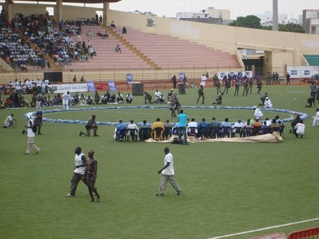

Home / River Valleys and First Cities / Africa: Sahel, West and Central
Playable heritage gameLaamb Wrestling Bout
Also known as Laamb · Lutte
A wrestling sport of Senegal and the Gambia, held on a circle of sand with drummers and a loud crowd behind each champion. Two wrestlers wrap, lift, hook and drive until one is put down or driven out of the circle.


How to play
- Read the rival's stance: it shows the move he is about to make.
- Tap the answering move while the marker is in the bright zone.
- Wrap a waist hold first, then lift; throws work best on a rival who is off balance.
- Win two of three rounds.
Rules at a glance
- A wrestler who goes down on the sand, or is driven outside the circle, loses the round.
- Each move beats two others and is beaten by two others; a good counter beats a good tap.
- The waist wrap builds your grip; lifts need a grip and an unsteady rival.
- A round also ends when one side leads by seven points, or when the clock runs out.
- Use Breathe to recover stamina; tired moves are weak.
About the tradition
Laamb, known to the Serer as njom, is among the most popular sports of Senegal, with champions followed by whole neighbourhoods and large stadium days. This game shows only the sport: the hold, the throw and the push-out.
Origins
Usually placed in the era of River Valleys and First Cities (about 3000 to 1000 BCE), although its exact origins are uncertain, within the cultural world of Africa: Sahel, West and Central.
Credits
- Game design: World Heritage Games (original)
- Photo: KaBa (KaaBaa), CC BY 3.0, source on Wikimedia Commons
- Text: CC BY-SA 4.0, World Heritage Games.
Sources

Get the app
Laamb Wrestling Bout is one of 18 sports and skill games in the Sports & Skill of the World app for iPhone, iPad and Android. Live on Google Play. Submitted to the App Store; in review, and the store link appears here the day it goes live. One app, many traditions, no account needed.
More games to play

Kushti / Pehlwani mud wrestling
India +1 · Wrestling and martial sportsPlay preview · in the Sports & Skill of the World app

Moraingy drum-and-strike duel
Madagascar · Wrestling and martial sportsPlay preview · in the Sports & Skill of the World app

Ndebele geometric wall painting
South Africa · Crafts and makingPlay preview · in the Paper & Paint of the World app
More from Senegal

Dakar Car Rapide Livery Painter
Senegal · Crafts and making